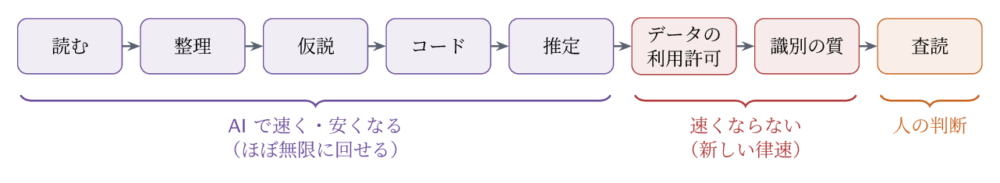

研究テーマをどう選ぶか：15軸と4つの群
AI に大量の論文を読ませ、テーマを大量に出させ、人が選ぶ。そのとき、候補を同じ物差しで比べる必要がある。 本書は、経済学・計量経済学のテーマを測る15軸と、それを4つの群にまとめて見る方法を定める。 軸は新しい発明ではなく、研究テーマ選定の古典的な問いと、実証経済学の信頼性をめぐる議論から取った。各軸に出典を付けた。 AI に経済学の論文を大量に書かせた先行の試みから、AI の弱点は着想とメカニズムの分析にあると分かっており、軸はそれに合わせて直した。 計量経済学の100テーマを採点し、ブラインド再採点と競合の検索で補正して、上位10個の案を出した。これは一次採点であり、選ぶのは人である。
3行でいうと
- テーマは「問いの価値」「信頼性」「実行可能性」「競争と出口」の4群・15軸で採点する。各軸1〜5点で、5がこのチームに有利である。
- 因果推論・構造推定・推定量の3トラックを同じ軸で比べる。読み替えが要る軸は表にした。
- 見るのは4群の点である。合計は4つの掛け算で、1つの群が弱いと全体が下がる。軸に重みは付けない。上位10個は点の順ではなく、設計とトラックが偏らない組合せで選ぶ。
1 結論を先に
- 合計点の1位を機械的に選ばない。4群の点を見て、弱い群が無いことを確かめる。上位10個は、設計とトラックが偏らないように組合せで選ぶ。
- AI で速くなる工程が律速のテーマを選ぶ。文献・データ構築・コード・頑健性の量で差がつくテーマでは、AI を積むほど勝率が上がる。データの利用許可が律速のテーマでは上がらない。
- 100テーマの採点では、AI を計量分析に使うときの手法と、合成データで検証できる手法が上位に来た。実データを使う実証テーマは上位に入らなかった。採点の仕組みがそうさせている面がある（7節）。
2 なぜテーマ選びがいちばん大事か
研究の1周を「読む→整理する→仮説を立てる→コードを書く→推定する→確かめる→公開する」に分ける。 AI が効く工程と効かない工程は、はっきり分かれる（図1）。

生成 AI が研究のどの作業に使えるかは、着想・文献調査・コード・データ分析などに分けて整理されている（Korinek, 2023）。 機械学習を仮説の生成そのものに使う手順も提案されている（Ludwig and Mullainathan, 2024）。 読む・書く・計算する工程が安くなると、仮説は「足りない」ものではなく「余る」ものになる。 余った仮説からどれを確かめるかを選ぶ力が勝負を決める。
一方で、AI が回帰を何百本でも回せることは、危険でもある。 経済学の実証研究には、検出力が低い研究が多いこと（Ioannidis et al., 2017）、有意な結果に偏った報告が手法によって違う程度で見られること（Brodeur et al., 2020）が報告されている。 だからテーマを選ぶ時点で、「識別できるか」「検出できるか」を重要度と同じ重さで見る。
「良い道具があれば、どのテーマでも勝てる」という考えは誤りである。 道具は使い回せるが、テーマの構造（外生変動があるか、データが手に入るか、競合が誰か）は後から変えられない。
3 15軸の定義と出典
theme/research/00_plan.md にある。迷ったら低い方を付ける。| 群 | 軸（記号） | 5点の状態 | 1点の状態 | 出典 |
|---|---|---|---|---|
| 問いの価値 | 重要度（Q） | 答えが出ると分野外の人の判断も変わる | 誰の判断も変わらない | （DARPA, n.d.; Hamming, 1986; Berk et al., 2017） |
| 新規性（N） | 信頼できる答えがまだ無い、または結果が割れている | 同じ設計の研究が複数ある | （DARPA, n.d.; Berk et al., 2017; Si et al., 2024） | |
| どちらの結果でも知見になるか（R） | 効果があっても無くても論文になる | うまくいったときだけ面白い | （Abadie, 2020; Brodeur et al., 2020; Berkeley Initiative for Transparency in the Social Sciences, n.d.） | |
| メカニズムを確かめられるか（T） | 競合する説明を手元のデータで判別できる | 効果の有無しか言えない | （Deaton, 2010; Low and Meghir, 2017; Li, 2026） | |
| 信頼性 | 識別・推論の信頼性（I） | 仮定が明確で、反証テストやシミュレーションで点検できる | 主張を支える手がかりが無い | （Angrist and Pischke, 2010; Keane, 2010; Morris et al., 2019） |
| 検出力・精度（W） | 妥当な大きさの差を十分な確率で検出できる | 妥当な差は検出できない | （Ioannidis et al., 2017） | |
| 外的妥当性・適用範囲（E） | 複数の文脈で成り立つ、使える場面が広い | 特殊な標本・設定に限られる | （Deaton, 2010） | |
| 実行可能性 | データ入手性（D） | 公開データで今日から始められる | 入手の見込みが立たない | （Vilhuber, 2020; Zhu and Wang, 2026） |
| 検証ループ速度（X） | やり直しが数日以内 | 年単位 | （DARPA, n.d.; INDXDev, n.d.） | |
| 倫理・法務・再現の低リスク（L） | 再現パッケージを全部公開できる | 公開にも AI の利用にも強い制約 | （American Economic Association, 2018; American Economic Association, n.d.; Christensen and Miguel, 2018） | |
| AI 増幅度（F） | 律速が AI の得意な工程にある | 律速が AI の苦手な工程にある | （Korinek, 2023; Li, 2026; INDXDev, n.d.） | |
| 競争と出口 | 競合の空白度（C） | 同じ問いの研究・既存ライブラリが見当たらない | 有力チームの論文や定番ライブラリがある | （INDXDev, n.d.） |
| 独自の資産（U） | 新しいデータ・コードが次の研究にも使える | 誰もが持っているものだけ | （Hamermesh, 2013） | |
| 出口の明確さ（O） | 出したい学会・査読誌に届く見込みがある | 受け手が思い当たらない | （Card and DellaVigna, 2013） | |
| ライブラリ価値（S） | 他の研究者が繰り返し使う道具になる | この論文でしか使わない | （Journal of Open Source Software, n.d.） |
各軸がなぜ要るかを、出典に沿って説明する。
3.1 問いの価値（Q・N・R・T）
- Q・N：Heilmeier の問いは「何をしようとしているか」「今のやり方の限界は何か」「何が新しいか」「誰が気にするか」を順に尋ねる（DARPA, n.d.）。Hamming は、重要な問題とは結果が大きい問題ではなく、攻め筋のある問題だと述べた（Hamming, 1986）。査読の指針も、重要性と、証拠が結論を支えているかを評価の中心に置く（Berk et al., 2017）。
- R：有意でない結果にも情報があり、条件によっては有意な結果より多い（Abadie, 2020）。「うまくいったときだけ面白い」テーマは、選択的な報告への圧力が強い（Brodeur et al., 2020）。AI が大量に推定できるラボでは、この圧力を最初から避ける。
- T：操作変数や無作為化実験の推定値だけでは、なぜ効くのかが分からず、他の文脈に持ち出しにくいという批判がある（Deaton, 2010）。構造モデルは、反実仮想を計算し、実験の結果と組み合わせて検証できる（Low and Meghir, 2017）。AI が書いた論文は、メカニズムの分析で人の論文に最も大きく劣っていた（Li, 2026）。だからテーマの段階で、「なぜ効くのか」を確かめるデータや設計があるかを見る。
3.2 信頼性（I・W・E）
- I：実証経済学の信頼性は、研究デザインを重視することで高まったと論じられている（Angrist and Pischke, 2010）。構造推定では、理論にもとづく仮定を明示することが信頼性の源になる（Keane, 2010）。どのデータの変動が推定値を決めているかを測る方法もある（Andrews et al., 2017）。推定量の研究では、シミュレーションの目的・データ生成過程・推定対象・手法・評価指標を先に決める枠組みが標準になっている（Morris et al., 2019）。
- W：検出力の低い研究は、有意になった推定値が効果を過大に示しやすい（Ioannidis et al., 2017）。検出力はテーマを選ぶ時点でおおよそ決まる。
- E：推定値が他の文脈に当てはまるかは、仕組みの理解に依存する（Deaton, 2010）。手法のトラックでは、使える場面の広さと読み替える。
3.3 実行可能性（D・X・L・F）
- D・L：経済学では、データとコードの公開が学術誌の方針として求められるようになった（Vilhuber, 2020; American Economic Association, n.d.）。秘匿データを使う研究は、再現パッケージを公開できず、AI に読ませることにも制約がある。透明性と再現性を高める手段は整理されている（Christensen and Miguel, 2018）。誠実さ・透明性は職業上の行動規範でもある（American Economic Association, 2018）。
- X：Heilmeier の問いの最後は「成功を確かめる中間試験と最終試験は何か」である（DARPA, n.d.）。中間試験を何回受けられるかは、1周の速さで決まる。元のラボの「実験ループ速度」を引き継いだ（INDXDev, n.d.）。
- F：元のラボの「ソフトウェアファクトリー増幅度」に当たる（INDXDev, n.d.）。AI の用途の整理（Korinek, 2023）と、AI の得手不得手の実測（Li, 2026）に照らして、テーマの律速がどの工程にあるかを見る。得意な工程は、文献の整理・データ構築・標準的な推定・頑健性の確認・シミュレーションである。苦手な工程は、新しいデータ源の開拓、制度の深い理解に依る着想、利用許可、現地調査である。
3.4 競争と出口（C・U・O・S）
- C：元のラボの「競合の空白度」を引き継いだ（INDXDev, n.d.）。手法のトラックでは、既存の定番ライブラリも競合に数える。
- U：上位誌では、理論論文の割合が下がり、著者が自分で集めたデータを使う実証研究が増えたと報告されている（Hamermesh, 2013）。独自のデータは、次の研究にも使える資産になる。
- O：上位誌は投稿が増えて採択率が下がったと報告されている（Card and DellaVigna, 2013）。出口を上位誌だけに置くと、成果が出るまでの時間が読めない。このラボは、学会発表と査読論文に届くことを最低線にする。
- S：ソフトウェア論文の査読基準は、必要性の説明・文書・テスト・機能を見る（Journal of Open Source Software, n.d.）。ライブラリは論文とは別の成果であり、手法のトラックでは主な出口になりうる。
4 3つのトラックを同じ軸で比べる
| 軸 | 因果推論・実証 | 構造推定 | 推定量・計量手法 |
|---|---|---|---|
| I | 外生変動があり、反証テストができる | どの変動がどのパラメータを決めるか説明でき、使っていないデータで当てはまりを確かめられる | 理論的な保証があり、シミュレーションで確かめられる |
| W | 妥当な効果を検出できる標本 | 反実仮想の幅が、結論を出せる狭さ | 既存手法との差が、現実的な標本で測れる |
| E | 他の文脈・時期にも当てはまる | 政策が変わっても前提が保たれる | 使える場面が広い |
| D | 実データの入手 | モデルを決める変動を含むデータの入手 | 合成データと公開の再現データで足りる |
| X | 推定のやり直しの時間 | 1回の推定の計算時間 | シミュレーション1周の時間 |
トラックをまたいで点を比べてよいか。 よくないという立場：手法の研究は合成データで回せるので、D・X・L が構造的に高くなる。同じ物差しでは実証研究が不利になる。 よいという立場：それは採点の歪みではなく、小さなチームにとっての実際の有利さである。 本書の立場：合計点はまたいで比べる。ただし上位10個には、各トラックから少なくとも2個を入れる（5節）。
5 4群の点・合計点・選ぶときの条件
5.1 4群の点を主に見る
既存の評価基準は4〜7個の観点でできている（6節）。15軸を横に並べると、選ぶ人には多い。 そこで、群ごとに軸の平均を取り、20〜100点に換算した群の点を主に見せる。15軸は内訳として畳む。 \(n_g\) は群 \(g\) に属する軸の数である。
5.2 合計は掛け算にする
合計点は、4群の点の幾何平均である。
足し算の平均では、致命的に弱い群を他の群の高得点が隠してしまう。掛け算なら、1つの群が弱いと全体が下がる。 重要さ・解きやすさ・手つかず度を掛け合わせて課題の優先順位を付ける考え方と同じである。 このため、足切りの条件は別に置かない。
5.3 軸に重みは付けない
当初は、目標（査読論文を確実に・ライブラリ・上位誌・早期成果）ごとに重みの型を4つ用意していた。これはやめた。 重みの値には根拠が無く、目標が複数あるために点数を配り分けていただけだったからである。 重く見たい項目があれば、その群や軸の点を直接見ればよい。ポータルの星取り表は、見出しを押すとその項目の順に並べ替わる。
5.4 根拠の無い点は上限2点にする
AI が出した研究アイデアは、人のアイデアより新しいと評価される一方で、実現性はやや劣り、AI 自身による評価は当てにならなかった（Si et al., 2024）。 また、データセットを見てから仮説を作ると、実行できる問いの割合が大きく上がる（Zhu and Wang, 2026）。 そこで、2つの軸には根拠の記入を求める。
- 新規性（N）：いちばん近い既存研究を3本挙げ、それぞれとの差を書く。書けなければ上限2点で計算する。上位10個は人が確かめる。
- データ入手性（D）：データの名前・入手手順・必要な変数があることの確認を書く。書けなければ上限2点で計算する。
5.5 上位10個は組合せで選ぶ
AI だけで書かせた経済学の論文は、74%が差の差を主な識別戦略にしていた（Li, 2026）。AI のアイデアは多様性に乏しいという報告もある（Si et al., 2024）。 点の順に上から10個を取ると、似たテーマが並ぶ。そこで、選ぶときに次の条件を置く。
- 同じ設計（例：差の差）は、上位10個のうち4個まで。
- 3つのトラックから、少なくとも2個ずつ入れる。
- 似たテーマ（同じデータ・同じ制度）は1個にまとめる。
ポータルの星取り表は、候補に入れたテーマがこの条件を満たすかを表示する。決めるのは人である。
6 同じ試みと既存の評価基準から学んだこと
AI に経済学の研究を大量に作らせる試みは、既にある。調査の詳細は theme/research/axes_review.md に書いた。
| 出どころ | 何が分かったか | 軸への反映 |
|---|---|---|
| AI だけで書いた実証論文912本と、人の論文41本の比較（Li, 2026） | 質の差の約7割はアイデアの質から来る。実行ではメカニズムの分析が最も弱く、頑健性の確認は差がない。74%が差の差 | T をメカニズムに。F を得手不得手に。組合せで選ぶ |
| 人の関門つきの多段エージェント（Zhu and Wang, 2026） | データを見てから仮説を作ると、実行できる問いが87%（見ない場合41%） | D に根拠の記入を求める |
| AI と人の研究アイデアの比較（Si et al., 2024） | AI のアイデアは新しいと評価されるが、実現性はやや劣る。AI の自己評価は不正確で、多様性に乏しい | N に根拠の記入を求める。人が確かめる |
| 人だけ・AI 補助・AI 主導での再現の競争（Brodeur et al., 2026） | AI 主導のチームは、再現の成功率が大きく劣った（要約による。原文は未確認） | 点検を AI だけに任せない。人の関門を残す |
| 仕様探索の記録と取り置きデータ（Shin, 2026） | AI は仕様探索を速く安くするが、見えない自由度も広げる | ロックと仕様の記録（段階4・7） |
| 結果が出る前の査読（Berkeley Initiative for Transparency in the Social Sciences, n.d.） | 第1の基準は、結果に依らない問いの重要さである | R をそのまま残す |
| 経済学の論文の公開評価（The Unjournal, n.d.） | 観点は7つ。主張と証拠、方法、貢献、伝え方、再現できる科学など | 観点の数を絞って見せる。伝え方と再現は段階8の点検に回す |
構造推定のトラックでは、どの仮定とデータの特徴が結論を動かすかを読者が追えることが、信頼性の中心になる（Andrews et al., 2020）。これは軸 I の読み替えに当たる。
7 100テーマを採点すると、手法の検証が上位に来た
計量経済学で100テーマを出し、15軸で採点した（2026-11-14）。内訳は、推定量・手法58、構造推定25、因果推論17である。
7.1 採点の手順
- AI が100テーマを書き、15軸を採点した（一次採点）。各テーマに、近い既存研究3本との差と、使うデータを付けた。
- 近い既存研究として挙げた文献は、題名で書誌を検索して確かめた。206件を文献マスター表に足し、DOI のある204件を Crossref で照合した。1件は見つからず、別の文献に差し替えた。
- データは27種類の所在（URL の応答）を確かめた。必要な変数があるかまでは見ていない。
- 別のエージェントが、一次採点の点を見ずに採点し直した（ブラインド再採点）。各軸で2人の平均を取り、端数を切り捨てた。
- 上位の11テーマについて、競合をウェブで検索し、点を直した。
7.2 一次採点は甘く、2人の順位はあまり一致しなかった
合計点の平均は、一次採点が71.2、ブラインド再採点が61.7であった。差が最も大きい軸は新規性（平均で1.03点）である。
一次採点は「公刊論文を新しい手法でやり直す」テーマの新規性を高く付けたが、評者は同じ設計の研究が既にあると指摘した。
2人の合計点の相関は0.61で、上位20個のうち両方に入ったのは7個だけである。数点の差で順位を語ることはできない。
競合の検索では、一次採点で4位だった「計算再現性の大規模点検」が、既に大規模に行われていると分かり、17位に下がった。
記録は theme/research/calibration/notes.md にある。
7.3 上位10個の案
合計点の上位から、選ぶときの条件（同じ設計は4個まで、各トラックから2個以上、似たテーマは1個にまとめる）を満たすように10個を選んだ。 点の順だけで選ぶと、上位10個に因果推論が0個、構造推定が1個しか入らない。そこで、似た2組をまとめ、合計点の9位と10位に当たる2個を外し、因果推論から2個、構造推定から1個を足した。 内訳は、手法6、構造推定2、因果推論2である。
theme/research/recommended.csv と scored.csv。| 順 | 型 | テーマ | 問いの価値 | 信頼性 | 実行可能性 | 競争と出口 | 合計 |
|---|---|---|---|---|---|---|---|
| 1 | 手法 | T031 LLM が作った変数を回帰に使うときの測定誤差の補正（T033 を統合） | 65 | 80 | 100 | 65 | 76.2 |
| 2 | 手法 | T057 AI の仕様探索は偽陽性をどれだけ増やすか：取り置きデータによる測定（T056 を統合） | 70 | 73 | 95 | 60 | 73.5 |
| 4 | 構造 | T069 ニューラルネットによる構造パラメータの推定：精度・速度・推論の検証 | 60 | 73 | 90 | 60 | 69.8 |
| 5 | 手法 | T035 統計書・行政文書の表を LLM で構造化するときの精度と誤差の伝播 | 55 | 67 | 85 | 75 | 69.5 |
| 7 | 手法 | T016 回帰不連続の操作検定の検出力：どの程度の操作なら見逃すか | 55 | 73 | 95 | 55 | 67.8 |
| 8 | 手法 | T004 処置の強さが連続のときの差の差：推定と診断の実装 | 60 | 67 | 95 | 55 | 67.6 |
| 9 | 手法 | T025 実データに似せたシミュレーションで推定量を選ぶ手順の妥当性 | 60 | 67 | 95 | 55 | 67.6 |
| 11 | 因果 | T044 クラスタの水準の選択が結論を変える頻度：公刊論文の再点検 | 60 | 73 | 85 | 55 | 67.3 |
| 15 | 因果 | T006 ゼロを含む結果変数の対数変換が結論を変える頻度の大規模点検 | 55 | 80 | 85 | 50 | 65.8 |
| 19 | 構造 | T068 観測されない異質性をもつ動学モデルの推定法の小標本での性能 | 55 | 67 | 90 | 55 | 65.3 |
theme/research/themes.csv の各欄にある。| テーマ | 推す理由 | いちばんの弱点・未確認の点 |
|---|---|---|
| T031 | LLM で作った変数を回帰に入れる研究が増えており、使う場面が広い。合成データだけで偏りの大きさと補正の効き目を示せる。4群のうち3群が上位 | 偏りの補正は Battaglia らが提案済みである。統計側の手法（設計にもとづく補正、予測を使った推論）との差を示せるかが勝負になる |
| T057 | このラボのロックと仕様の記録が、そのまま測定の道具になる。効果が無いと分かっている設定で偽陽性率を測れば、どちらの結果でも知見になる | 2026年に近い研究が出始めた。エージェントへの指示の書き方に結果が左右される |
| T069 | 構造推定のトラックで最上位。古典的なモデルで従来法と比べ、どこで失敗するかを示す検証は、提案者以外がやる価値がある | 手法の進歩が速い。提案者（Wei・Jiang）の検証が先に広がるおそれがある |
| T035 | 日本の古い統計書は手つかずで、作ったデータが次の研究の資産になる。「競争と出口」が75点で最も高い | 文書ごとに読み取りの精度が大きく違う。照合に使う正解データをどこまで用意できるかは未確認 |
| T016 | 検定を通ったことを安全の根拠にする慣行に、直接効く。合成データで完結し、最初の結果が数週間で出る | 問いが小さい。論文としては短報どまりになりうる（「問いの価値」55点） |
| T004 | 処置の強さが連続の場合は、使いやすい実装と診断がまだ薄い。ライブラリを出口にできる | 理論が発展途上で、推奨が変わりうる。提案者自身のパッケージ（contdid）が先行している |
| T025 | このラボの段階6（シミュレーター）そのものが主題になる。自分たちの手順の妥当性を確かめる研究でもある | Advani らが既に否定的な結果を出している。同じ結論の追認に終わるおそれがある |
| T044 | 因果推論のトラックで最上位。理論は示されたが、公刊論文で結論が変わる頻度を数えた研究は検索で見つからなかった。再推定の量で勝負できる | 適切なクラスタの水準を決めるには、論文ごとに制度の知識が要る |
| T006 | 因果推論のトラックの2番目。対数変換の問題は Chen・Roth が示しており、公刊論文での頻度を数える作業は AI の量が効く | 問題提起は済んでおり、追加の知見が薄いとブラインド評者が指摘した。合計点は T030（感度分析の一括適用）と同点である |
| T068 | 構造推定のトラックの2番目。実装が難しく参入が少ない。合成データで完結する | 需要が細い。比較研究の域を出ないおそれがある（「問いの価値」「競争と出口」が55点） |
これは一次採点である。次の点を確かめていない。
- 点は AI の事前知識にもとづく。近い既存研究は書誌を照合しただけで、本文も要旨も読んでいない。
- 競合の検索は上位の11テーマだけで、見たのは検索結果の要約である。「見つからなかった」は、無いことの証明ではない。
- データは所在を確かめただけである。
- ブラインド評者の指摘（既にある研究の名前）は、評者の事前知識であり、原文で確かめていない。
選んだ10個は、段階2のディープダイブで調べ直す。
7.4 採点の仕組みが、合成データのテーマを上に押し上げている
上位22個はすべて、合成データか公開の再現パッケージで進めるテーマである。実行可能性の群で、これらがほぼ満点になるためである。 実データを使う実証テーマと、個票が要る構造推定のテーマは、問いの価値が高くても合計では下位になる。 問いの価値で並べ替えると、顔ぶれは変わる。上位には、合計点で87位のテーマも入る。 軸に重みを付けない方針のもとでは、人が「問いの価値」で並べ替えて見て、実証テーマを入れるかどうかを判断する必要がある。
段階1の関門：人の判断（2026-11-14）
- 判断：次の10個をディープダイブに進める。T021、T031、T036、T039、T063、T065、T068、T069、T076、T099。
- 内訳：推定量・手法3（T021、T031、T039）、構造推定5（T063、T065、T068、T069、T076）、因果推論2（T036、T099）。
- AI の案（表4）との違い：案と同じものは T031、T068、T069 の3個である。実データを使うテーマ（T036、T063、T076、T099）と、構造推定が多く入った。
- 理由：未記入（人が書く）。
- 次の一手：10個を段階2でディープダイブする（AI が
deepdive/に下書き。人が1〜2個に絞る）。
7.5 合計点の上位20個
theme/research/themes.csv。| 順 | 型 | テーマ | 問いの価値 | 信頼性 | 実行可能性 | 競争と出口 | 合計 |
|---|---|---|---|---|---|---|---|
| 1 | 手法 | T031 LLM が作った変数を回帰に使うときの測定誤差の補正 | 65 | 80 | 100 | 65 | 76.2 |
| 2 | 手法 | T057 AI の仕様探索は偽陽性をどれだけ増やすか：取り置きデータによる測定 | 70 | 73 | 95 | 60 | 73.5 |
| 3 | 手法 | T056 AI エージェントによる多分析者研究：同じデータと問いで分析はどれだけ割れるか | 65 | 67 | 95 | 60 | 70.5 |
| 4 | 構造 | T069 ニューラルネットによる構造パラメータの推定：精度・速度・推論の検証 | 60 | 73 | 90 | 60 | 69.8 |
| 5 | 手法 | T035 統計書・行政文書の表を LLM で構造化するときの精度と誤差の伝播 | 55 | 67 | 85 | 75 | 69.5 |
| 6 | 手法 | T033 LLM を予測と推定に使うときの妥当性条件の検査手順 | 65 | 67 | 85 | 60 | 68.6 |
| 7 | 手法 | T016 回帰不連続の操作検定の検出力：どの程度の操作なら見逃すか | 55 | 73 | 95 | 55 | 67.8 |
| 8 | 手法 | T004 処置の強さが連続のときの差の差：推定と診断の実装 | 60 | 67 | 95 | 55 | 67.6 |
| 9 | 手法 | T025 実データに似せたシミュレーションで推定量を選ぶ手順の妥当性 | 60 | 67 | 95 | 55 | 67.6 |
| 10 | 手法 | T055 検出力計算のための効果量データベース：経済学の主要な介入 | 55 | 67 | 75 | 75 | 67.4 |
| 11 | 因果 | T044 クラスタの水準の選択が結論を変える頻度：公刊論文の再点検 | 60 | 73 | 85 | 55 | 67.3 |
| 12 | 手法 | T039 テキスト・画像の埋め込みを回帰の説明変数に使うときの推論 | 50 | 67 | 100 | 60 | 66.9 |
| 13 | 手法 | T062 文献から抽出した推定値の自動メタ分析：抽出の誤りが結論に与える影響 | 60 | 67 | 75 | 65 | 66.5 |
| 14 | 手法 | T005 カウント・二値の結果変数に対する差の差の性能比較 | 50 | 80 | 95 | 50 | 66.0 |
| 15 | 因果 | T006 ゼロを含む結果変数の対数変換が結論を変える頻度の大規模点検 | 55 | 80 | 85 | 50 | 65.8 |
| 16 | 因果 | T030 欠落変数に対する感度分析を公刊論文に一括適用する | 60 | 67 | 85 | 55 | 65.8 |
| 17 | 因果 | T053 上位誌の実証論文の計算再現性を AI で大規模に点検する | 55 | 80 | 85 | 50 | 65.8 |
| 18 | 手法 | T048 仕様曲線と頑健性分析の自動化、多重性を考えた推論 | 50 | 67 | 100 | 55 | 65.4 |
| 19 | 構造 | T068 観測されない異質性をもつ動学モデルの推定法の小標本での性能 | 55 | 67 | 90 | 55 | 65.3 |
| 20 | 手法 | T022 因果フォレストの異質性推定はどれだけ再現するか：実験データでの検証 | 70 | 60 | 85 | 50 | 65.0 |
8 この枠組みの限界
- 出典は、軸を置く理由を示すものである。アンカーの文言と重みは筆者が決めたもので、出典がそう定めているわけではない。
- 出典の読み方：DOI は Crossref で照合した。本文は今回開いておらず、内容の要約は AI の事前知識にもとづく。人が原文で確かめるまで、要約は未確認として扱う（
theme/research/sources.md）。 - 数点の差には意味がない。見るべきは、弱い群が無いかである。
- 先行の試みの知見（Li, 2026; Zhu and Wang, 2026）は査読前の論文による。AI の論文を採点したのは LLM であり、人の査読者ではない。
更新履歴
- 2026-11-14：作成。15軸・4レンズ・3トラック。12テーマの試行採点。
- 2026-11-14：先行の試みと既存の評価基準を調べ、6点を直した（人が承認）。4群の点を主役にして合計を掛け算に、T をメカニズムに、N と D は根拠の欄が無ければ上限2点に、F を AI の得手不得手に、上位10個は組合せで選ぶ。足切りと勝算指数はやめた。
- 2026-11-14：重みの型（4つのレンズ）をやめ、全軸を同じ重みにした（人の判断）。重く見たい項目は、星取り表で並べ替えて見る。
- 2026-11-14：計量経済学の100テーマを採点した。ブラインド再採点と競合の検索で補正し、上位10個の案を出した（一次採点。人の承認はまだ）。12テーマの試行採点は
theme/research/incoming/_pilot12.csvに残した。 - 2026-11-14：人が10テーマを選んだ（段階1の関門）。AI の案とは7個が違う。
参考文献
- Abadie, Alberto（2020）「Statistical Nonsignificance in Empirical Economics」American Economic Review: Insights 2 (2) 193–208 doi:10.1257/aeri.20190252 PDF
- American Economic Association（2018）「AEA Code of Professional Conduct」 https://www.aeaweb.org/about-aea/code-of-conduct（閲覧 2026-11-14）
- American Economic Association（n.d.）「Data and Code Availability Policy」 https://www.aeaweb.org/journals/data/data-code-policy（閲覧 2026-11-14）
- Andrews, Isaiah, Gentzkow, Matthew, Shapiro, Jesse M.（2017）「Measuring the Sensitivity of Parameter Estimates to Estimation Moments」The Quarterly Journal of Economics 132 (4) 1553–1592 doi:10.1093/qje/qjx023
- Andrews, Isaiah, Gentzkow, Matthew, Shapiro, Jesse M.（2020）「Transparency in Structural Research」Journal of Business & Economic Statistics 38 (4) 711–722 doi:10.1080/07350015.2020.1796395 PDF
- Angrist, Joshua D., Pischke, Jorn-Steffen（2010）「The Credibility Revolution in Empirical Economics: How Better Research Design Is Taking the Con out of Econometrics」Journal of Economic Perspectives 24 (2) 3–30 doi:10.1257/jep.24.2.3
- Berk, Jonathan B., Harvey, Campbell R., Hirshleifer, David（2017）「How to Write an Effective Referee Report and Improve the Scientific Review Process」Journal of Economic Perspectives 31 (1) 231–244 doi:10.1257/jep.31.1.231 PDF
- Berkeley Initiative for Transparency in the Social Sciences（n.d.）「Pre-results Review at the Journal of Development Economics: Frequently Asked Questions for Reviewers」 https://www.bitss.org/?p=7114（閲覧 2026-11-14）
- Brodeur, Abel, Cook, Nikolai, Heyes, Anthony（2020）「Methods Matter: p-Hacking and Publication Bias in Causal Analysis in Economics」American Economic Review 110 (11) 3634–3660 doi:10.1257/aer.20190687 PDF
- Brodeur, Abel, Valenta, David, Marcoci, Alexandru, Aparicio, Juan P., others（2026）「AI-assisted teams outperform AI-led teams but not human-only teams in assessing research reproducibility in quantitative social science」Proceedings of the National Academy of Sciences 123 (22) doi:10.1073/pnas.2524747123 PDF
- Card, David, DellaVigna, Stefano（2013）「Nine Facts about Top Journals in Economics」Journal of Economic Literature 51 (1) 144–161 doi:10.1257/jel.51.1.144
- Christensen, Garret, Miguel, Edward（2018）「Transparency, Reproducibility, and the Credibility of Economics Research」Journal of Economic Literature 56 (3) 920–980 doi:10.1257/jel.20171350 PDF
- DARPA（n.d.）「The Heilmeier Catechism」 https://www.darpa.mil/about/heilmeier-catechism（閲覧 2026-11-14）
- Deaton, Angus（2010）「Instruments, Randomization, and Learning about Development」Journal of Economic Literature 48 (2) 424–455 doi:10.1257/jel.48.2.424
- Hamermesh, Daniel S.（2013）「Six Decades of Top Economics Publishing: Who and How?」Journal of Economic Literature 51 (1) 162–172 doi:10.1257/jel.51.1.162
- Hamming, Richard W.（1986）「You and Your Research」Bell Communications Research Colloquium Seminar の講演録 https://www.cs.virginia.edu/~robins/YouAndYourResearch.html（閲覧 2026-11-14）
- INDXDev（n.d.）「indx-lab: AI ネイティブ・ラボラトリー」 https://github.com/INDXDev/indx-lab（閲覧 2026-11-14）
- Ioannidis, John P. A., Stanley, T. D., Doucouliagos, Hristos（2017）「The Power of Bias in Economics Research」The Economic Journal 127 (605) F236–F265 doi:10.1111/ecoj.12461
- Journal of Open Source Software（n.d.）「Review criteria」 https://joss.readthedocs.io/en/latest/review_criteria.html（閲覧 2026-11-14）
- Keane, Michael P.（2010）「Structural vs. atheoretic approaches to econometrics」Journal of Econometrics 156 (1) 3–20 doi:10.1016/j.jeconom.2009.09.003
- Korinek, Anton（2023）「Generative AI for Economic Research: Use Cases and Implications for Economists」Journal of Economic Literature 61 (4) 1281–1317 doi:10.1257/jel.20231736
- Li, Ning（2026）「The Ideation Bottleneck: Decomposing the Quality Gap Between AI-Generated and Human Economics Research」arXiv:2604.03338（査読前） https://arxiv.org/abs/2604.03338（閲覧 2026-11-14） PDF
- Low, Hamish, Meghir, Costas（2017）「The Use of Structural Models in Econometrics」Journal of Economic Perspectives 31 (2) 33–58 doi:10.1257/jep.31.2.33 PDF
- Ludwig, Jens, Mullainathan, Sendhil（2024）「Machine Learning as a Tool for Hypothesis Generation」The Quarterly Journal of Economics 139 (2) 751–827 doi:10.1093/qje/qjad055
- Morris, Tim P., White, Ian R., Crowther, Michael J.（2019）「Using simulation studies to evaluate statistical methods」Statistics in Medicine 38 (11) 2074–2102 doi:10.1002/sim.8086 PDF
- Shin, Minchul（2026）「An Auditable AI Agent Loop for Empirical Economics: A Case Study in Forecast Combination」arXiv:2603.17381（査読前） https://arxiv.org/abs/2603.17381（閲覧 2026-11-14） PDF
- Si, Chenglei, Yang, Diyi, Hashimoto, Tatsunori（2024）「Can LLMs Generate Novel Research Ideas? A Large-Scale Human Study with 100+ NLP Researchers」arXiv:2409.04109 https://arxiv.org/abs/2409.04109（閲覧 2026-11-14） PDF
- The Unjournal（n.d.）「Guidelines for evaluators」 https://globalimpact.gitbook.io/the-unjournal-project-and-communication-space/policies-projects-evaluation-workflow/evaluation/guidelines-for-evaluators（閲覧 2026-11-14）
- Vilhuber, Lars（2020）「Reproducibility and Replicability in Economics」Harvard Data Science Review 2 (4) doi:10.1162/99608f92.4f6b9e67 PDF
- Zhu, Chen, Wang, Xiaolu（2026）「HLER: Human-in-the-Loop Economic Research via Multi-Agent Pipelines for Empirical Discovery」arXiv:2603.07444（査読前） https://arxiv.org/abs/2603.07444（閲覧 2026-11-14） PDF